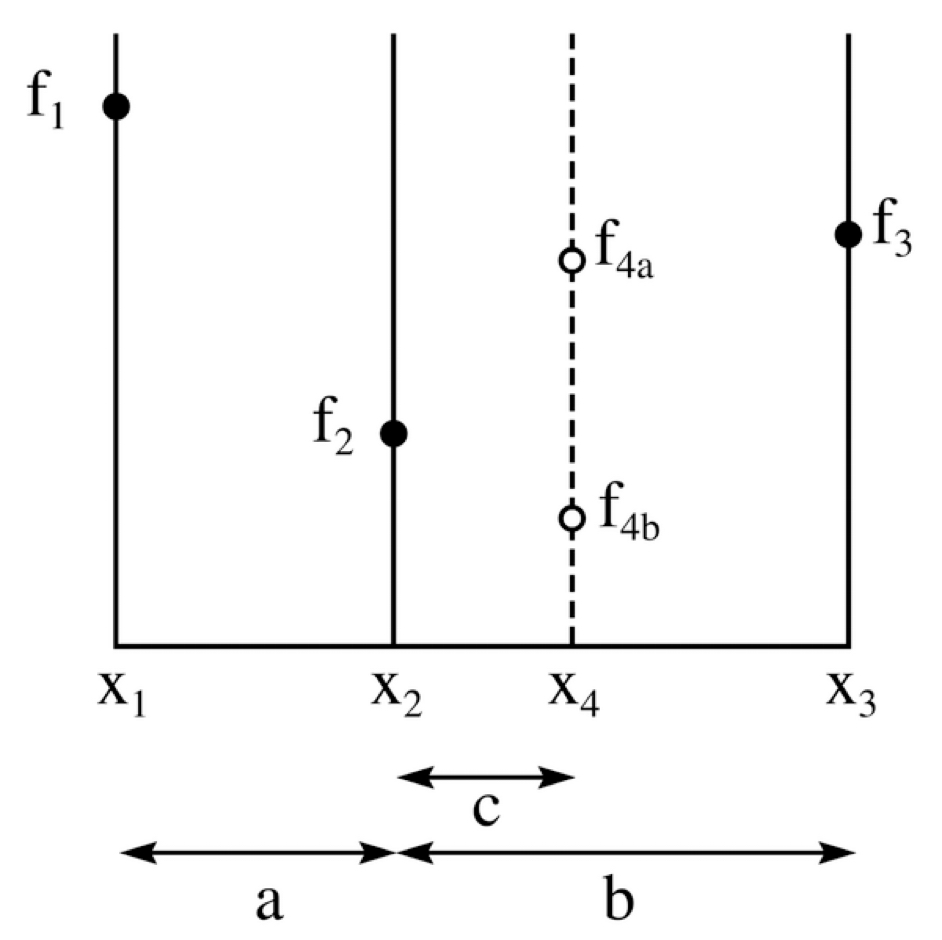
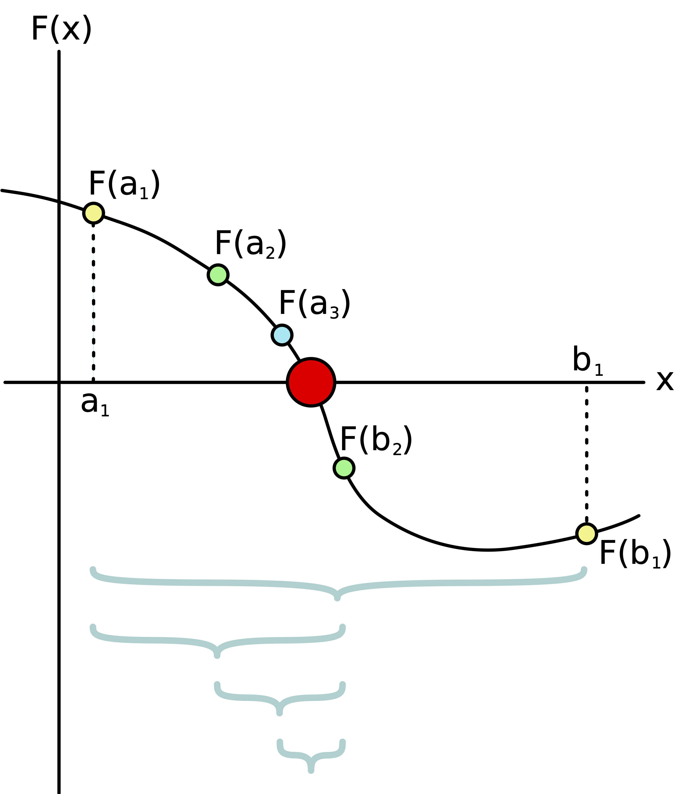
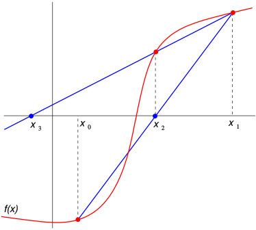
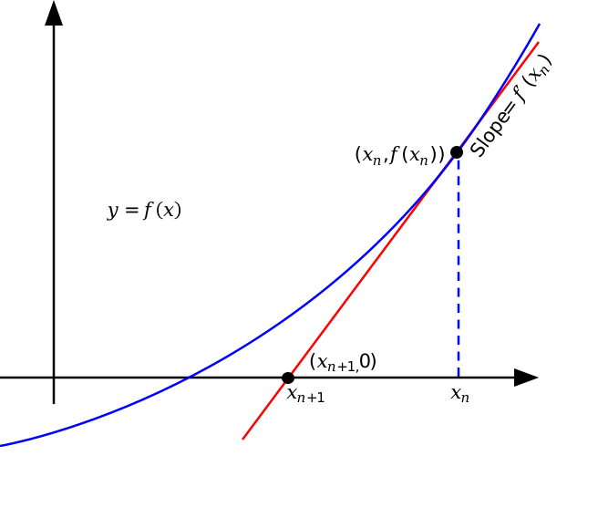

2 Optimization using gradients
2.1 Overview
One often has to find the maximum or minimum of a function that describes an important biological property. Examples include:
Free energy of a protein as function of its conformation (the folding problem)
Evolutionary fitness as a function of the genome
Optimizing the dose of therapeutic radiation or chemotherapy, to affect the maximal fraction of tumor cells and the minimal number of healthy cells
In all these cases, there is the same fundamental problem: given a complex function of many variables, find the values of the variables which optimize the function, that is, for which it attains its maximum or minimum, depending on the question.
Some terminology: \(f\) is known as the objective function, and the quantities the function depends on (\(x_1, x_2, ..., x_n\)) are the governing variables.
It is important to note the notion of a minimum or a maximum is local: it is a point which is lowest or highest in some neighborhood. But very often we are interested in a global optimum - the best possible solution to our problem. The first problem is not too difficult, while the second is practically impossible for a complex function, because, aside from the areas explored by minimization, there is no way to guarantee that there is no better optimum elsewhere. This is the tragic state of optimizers everywhere - they have to live with the uncertainty.
2.2 Optimization with one variable
2.2.1 golden section search
Let us first consider searching for the minimum (or maximum, the problems are really the same except for a minus sign) of a function of one variable \(f(x)\). The goal is to locate the minimum value of the function within a certain interval on the \(x\)-axis, to a desired tolerance. We assume only that we can evaluate the function at any given value of \(x\). Here is the outline of the algorithm:
- start with three points \(x_1,x_2,x_3\) \((x_1<x_2<x_3)\), such that \(f(x_2) < f(x_1)\) and \(f(x_2) < f(x_3)\)
- choose a point \(x_4\) in the larger of the intervals \((x_1,x_2)\) or \((x_2,x_3)\) (let’s assume it’s \((x_1,x_2)\), the process is the same for the other case)
- if \(f(x_4) > f(x_2)\), replace \(x_1\) with \(x_4\), the new triplet is \((x_4, x_2, x_3)\)
- if \(f(x_4) < f(x_2)\), replace \(x_3\) with \(x_2\), the new triplet is \((x_1, x_4, x_2)\)
- repeat until the width of the interval is smaller than your tolerance

{kind=link}
The question is, what is the optimal way to pick the new point \(x_4\)? Since we have no information about the shape of the function \(f(x)\), we don’t know where the minimum is more likely to be hiding. The best approach is to hedge your bets and make each option (3 or 4) result in the same interval scaled by the same factor.
Assume that we pick \(x_4\) in \((x_1, x_2)\), as the larger interval, and we want to pick \(x_4\) so that the length is reduced by the same factor in both cases: \((x_4, x_2, x_3)\) and \((x_1, x_4, x_2)\) and the resulting triplet is also divided in the same proportion. This is the condition for the golden ratio (that the ratio of the larger segment to the whole is the same as the ratio of the smaller segment to the larger). Thus, the the choice for the new point is \(x_4 = x_1 + (x_3 - x_1)/\phi\), where \(\phi = (1 + √5)/2\). Similarly, if the interval \((x_2,x_3)\) is larger, we pick \(x_4 = x_3 - (x_3 - x_1)/\phi\).
Notice that this means that the interval bracketing the minimum shrinks by a factor of \(\phi \approx 1.61\) every step.
2.2.2 bisection method
The bisection method is applicable for a continuous function \(f(x)\) which has a computable derivative function \(F(x)\). In that case, finding a maximum or minimum of f(x) is the same as finding a root of the derivative function F(x). The bisection method simply divides the bracketing interval that contains the maximum or minimum into two, like this:

{kind=link}
- start with an interval \((a,b)\) with \(F(a)\) and \(F(b)\) of opposite signs
- choose \(c = (b-a)/2\)
- pick the side on which the two endpoints are bracketing zero, so the new interval is either \((a,c)\) or \((c,b)\)
- repeat until the interval width is smaller than the tolerance
In this case, the bracketing interval is always decreased by a factor of two, which is faster than the golden section search.
2.2.3 secant method
Secant method is also a root-finding method, and can thus be used to find optima of functions with a computable derivative. If the derivative function is f(x), then the algorithm is:
- start with a bracketing interval \((x_0, x_1)\)
- calculate the slope of the (secant) line that connects the two points \(a = \frac{f(x_1) - f(x_0)}{x_1 - x_0}\)
- pick the next value \(x_i = x_{i-1} - af(x_{i-1})\), which is where the secant line crosses 0
- repeat until \(f(x_i)\) is close enough to zero

The secant method is faster to converge than bisection for most functions.
2.2.4 Newton-Raphson method
We will now consider an old method for finding roots of functions, devised by the Great Newton Himself, is also useful for finding maxima and minima of functions for which an exact formula is given. To use for optimization, it requires not only the knowledge of the derivative function \(f(x)\) (as for secant and bisection method) but also the knowledge of the second derivative function \(f'(x)\) of the function we want to optimize.
The idea is based on the first-order Taylor expansion of a function near a point \(x_0\): \(f(x_0 + \Delta x) = f(x_0) + \Delta x f'(x_0) + ...\). The dots indicate higher-order terms that we will ignore, for sufficiently small \(\Delta x\). Now, suppose the function has a root (zero) at \(x_0\), so \(f(x_0) = 0\). Then, if we are at a point near the root, \(x_0 + \Delta x\), we can calculate how far away it is from the root, by simply solving for \(\Delta x = f(x_0 + \Delta x) / f'(x_0)\). The idea of Newton’s method is to find the step size needed to reach the root, by using the value of the derivative at the current point \(x_0 + \Delta x\) (assuming the points are close enough that the slopes are almost equal). Then the steps for the algorithm are:
Start at some point \(x_0\) (not the root, as above)
Let \(x_{i+1} = x_i - f(x_i)/f'(x_i)\)
Repeat, until \(|x_{i+1} - x_i|< \epsilon_{tol}\), where \(\epsilon_{tol}\) is the specified tolerance

{kind=link}
The method turns out to be very efficient. Its only limitation is that it cannot find a root for which the derivative is zero (graphically, a root at which the graph of the function only touches the \(x\)-axis). Another complication is that, if the starting point is not close enough to a root, it can be hard to predict which root the method will find, but once it settles in near one, it will reach it quickly. If the value of the derivative \(f'(x_i)\) is small, then the method can bounce around, sometimes almost chaotically, so its efficiency strongly depends on starting in proximity to a root.
To be used for optimization of a function \(F(x)\), we need to be able to calculate \(F'(x) = f(x)\) and \(F''(x) = f'(x)\) and the find the root(s) of \(f(x)\). Then one has to check whether the extremum is a max or a min, which is straightforward.
2.3 Optimization of multivariable functions using derivatives
Let us now consider functions of multiple variables, which is the case for most real applications. Such, a function, e.g. \(f(x,y)\), takes in values of the variables \(x\) and \(y\), and returns a single number. Graphically, this could be plotted as a surface, with the height at any pair of coordinates \((x,y)\) given by \(f(x,y)\). Intuitively, the goal of optimization is to find the lowest (or highest) point on the surface, at least in a neighborhood (see above discussion about difficulties of global optimization). Let us assume that we are searching for a minimum, as the story is completely equivalent for maximization.
2.3.1 multivariable optimization problem
A function of more than one variable is denoted by \(f(\vec x)\), where \(\vec x\) is a vector of \(n\) variables \(x_1, x_2, ..., x_n\). This means the function takes in a vector of several numbers and returns a scalar - a single number. One simple visual analogy is the function that gives elevation (height) for a given latitude and longitude \((x,y)\). By plotting that function we would produce the shape of a mountain range or any other terrain, with the appropriate height at each point in the \(x-y\) plane.
The basic condition for finding the maximum or minimum of a function is known from basic calculus. For a function of \(n\) variables \(f(x_1, x_2, ..., x_n)\) to be at an optimum, all partial derivatives must vanish:
\[ \frac{\partial f(x_1, x_2, ..., x_n)}{\partial x_1} = \frac{\partial f(x_1, x_2, ..., x_n)}{\partial x_2} = ... = \frac{\partial f(x_1, x_2, ..., x_n)}{\partial x_n} = 0 \]
This gives a set of \(n\) equations to be solved for \(n\) unknowns. However, in practice optimization problems are rarely solved this way, because solving \(n\) nonlinear equations can be difficult, particularly for complicated functions that frequently arise in biology. However, one can use iterative methods to converge to the optimum using derivatives of the objective function.
2.3.2 gradient and contours
In order to describe the changes in multivariable functions, we need more than one number. Consider the slope on the surface of a mountain: it may be steep in one direction, and flat in another. In order to deal with this, partial derivatives are used. These represent the rate of change of \(f\) with respect to \(x\) and \(y\) separately. Geometrically, this means the slope of the landscape we visualized above, if sliced in the \(x\) or \(y\) direction.
Example: If \(f(x,y) = x^2-2x+y^2+4x+5\)
\[ \frac{\partial f}{\partial x} = 2x -2 \\ \frac{\partial f}{\partial y} = 2y +4 \]
This allows us to define the multi-dimensional equivalent of the derivative: the gradient of a function,
The gradient of a function \(f(\vec x)\) of multiple variables \(\vec x = x_1, .., x_n\) is a vector with \(n\) components, each one the partial derivative with respect to the corresponding variable:
\[ \nabla f (\vec x) = (\frac{\partial f}{\partial x_1}, \frac{\partial f}{\partial x_2}, ..., \frac{\partial f}{\partial x_n}) \]
To gain some geometric intuition about gradients, let us introduce the notion of contours of \(f(\vec x)\)
The contours or level curves of a function \(f(\vec x)\) of multiple variables \(\vec x = x_1, .., x_n\) are sets of values of \(\vec x\) that satisfy equations, for any given constant c:
\[ f (\vec x) = c \]
These are curves (for two-variable functions) or surfaces (for three-variable functions) in the space of the variables on which the function is equal to a particular constant. One common example of this are contours of a landscape (e.g. on the Earth’s surface) on a topographical map.
There is an important relationship between gradients and contours. Since there there is no change in \(f\) as one travels along it, the derivative of the function in the direction of the contour curve at any point is 0. As a consequence, the direction of the fastest change of \(f\) at any point, \(\nabla f\) is orthogonal to the level curve at that point.
Example: Let us find the contours (level curves) for the function we gave above, which means the solution of the equation \(f(x,y) = (x-1)^2+(y+2)^2 = c\). These are circles centered at \((1,-2)\), with the radius depending on the value of \(c\).
Let us compare the direction of the gradient at a point, let us say at \((0,-2)\). This point is horizontally to the left of the center of the circular level curves. Thus, the tangent line to the circle at the point is vertical. The gradient is \(\nabla f = (-2,0)\): a vertical vector, perpendicular to the direction of the circle at that point.
2.3.3 gradient descent
The simplest idea for finding the lowest point in a valley is to follow the slope downward. In multiple dimensions, the direction of greatest downward change (steepest descent) is given by the gradient, which leads to the gradient descent algorithm.
The first method for minimization of a multidimensional function simply takes steps in the direction of the gradient, until the point is sufficiently close to the bottom of the valley. This is called the method of gradient descent:
Start at some point \(\vec x_0\).
Compute the gradient at the current point \(\vec x_i\), \(\nabla f (\vec x_i)\). Find the minimum of the function \(f\) along that direction, which may be done through a one-dimensional search.
Take the next point to be \(x_{i+1} = x_i + \alpha \nabla f (\vec x_i)\), where \(\alpha\) is the multiple found by the one-dimensional search.
Repeat until \(|| \vec x_{i+1} - \vec x_i || < \epsilon_{tol}\), where \(\epsilon_{tol}\) is the specified tolerance
The gradient descent method, although intuitively simple, is in practice inefficient. Specifically, it has difficulties with descending into a long, narrow valley: it takes many short, zigzagging steps on the way to the lowest point. Relying on the steepest way down is not the fastest way of reaching the minimum, although it is guaranteed to converge eventually, if it takes small steps.
2.3.4 Newton-Raphson method
A different approach at finding the minimum of a multi-variable function is to extend the Newton-Raphson method from one variable to multiple. The idea is once again to convert the optimization problem for \(f(\vec x)\) into a root-finding problem for \(\nabla f (\vec x)\) where the gradient function plays the role of the derivative in the 1-dimensional Newton’s method. In order for this to work, we need an equivalent to the second derivative as well.
For a function \(f(\vec x)\) of a vector variable \(\vec x\) with \(n\) components, the Hessian is a \(n\) by \(n\) matrix, with each element defined as the second partial with respect to two variables:
\[ H_{i,j} = \frac{\partial^2 f}{\partial x_i \partial x_j} \]
Example: For the same function we saw \(f(x,y) = x^2-2x+y^2+4x+5\), with the gradient:
\[ \frac{\partial f}{\partial x} = 2x -2 \\ \frac{\partial f}{\partial y} = 2y +4 \]
The Hessian requires computing two more partials for each of the elements of the gradient:
\[ \frac{\partial^2 f}{\partial x^2} = 2 \\ \frac{\partial^2 f}{\partial x \partial y} = 0 \\ \frac{\partial^2 f}{\partial y \partial x} = 0 \\ \frac{\partial^2 f}{\partial y^2} = 2 \]
So the Hessian matrix is
\[ H(f(\vec x)) = \begin{pmatrix} 2 & 0 \\ 0 & 2 \end{pmatrix} \]
Now that we have the multi-variable equivalents of \(f'(x)\) and \(f''(x)\), we can formulate the multidimensional Newton-Raphson algorithm using vectors and matrices:
Define the gradient function \(\nabla f (\vec x)\) and the Hessian function \(H(\vec x)\)
Start at some point \(\vec x_0\) (as long as it is not the minimum)
Update the point using\(\vec x_{i+1} = \vec x_i - H^{-1}(\vec x_i) \nabla f(\vec x_i)\)
Repeat until \(|| \vec x_{i+1} - \vec x_i || < \epsilon_{tol}\), where \(\epsilon_{tol}\) is the specified tolerance
The geometric intuition of the Newton-Raphson method relies on the fact that the second derivative (Hessian) matrix \(H\) represents the curvature of the objective function, similar to the coefficient \(a\) of the 1-variable quadratic function \(ax^2 + bx + c\). Instead of simply using the gradient, or the linear component of the objective function, this method uses the curvature to speed up the search. In fact, Newton-Raphson performs very efficiently once it is within a nearly quadratic-shaped well, but doesn’t do very well far from the minimum.
2.3.5 Levenberg-Marquardt method
The Levenberg-Marquardt method is a combination of the gradient descent and Newton-Raphson methods. It uses their respective strengths, by using the gradient to quickly reach the vicinity (approximately quadratic valley) of a minimum, and then use the curvature information from the Hessian to finish the job efficiently. The insight of this method is that one can interpolate between the two methods by introducing a parameter \(\lambda\) which at high values weigh the method toward gradient descent, and at small values the Hessian and therefore Newton’s method dominates. Here is an outline of the algorithm, which starts with a large value of \(\lambda\), assuming that the initial guess \(\vec x_0\) is far from the minimum:
Define the gradient function \(\nabla f (\vec x)\) and the Hessian function \(H(\vec x)\)
Start at some point \(\vec x_0\) (as long as it is not the minimum) and set \(\lambda\) to be large (e.g. 1000)
Update the point using \(\vec x_{i+1} = \vec x_i - \left(H(\vec x_i) + \lambda diag[H(\vec x_i) ] \right)^{-1} \nabla f(\vec x_i)\)
If \(f(\vec x_{i+1}) < f(\vec x_i)\) (the new point is an improvement), accept \(\vec x_{i+1}\) and divide \(\lambda\) by a factor \(S\) (which can be set to be any positive real number, usually in the range of 2-10)
else (if the point is not an improvement) keep \(\vec x_i\) as the current point and multiply \(\lambda\) by \(S\)
Repeat until \(|| \vec x_{i+1} - \vec x_i || < \epsilon_{tol}\), where \(\epsilon_{tol}\) is the specified tolerance
When \(\lambda=0\), the updating expression is identical to the Newton-Raphson step. One unusual insight in the method is the use of the diagonal of the Hessian instead of just the identity matrix, which is in line with the gradient descent updating step. It turns out that using the diagonal of the Hessian matrix (which contains the second derivatives w.r.t. to all the variables) guarantees more efficient convergence than using just the identity matrix by using the geometry of the curvature to scale the gradient accordingly. This method is widely used in nonlinear least squares fitting problems, such as fitting data to exponential or other complex functions.